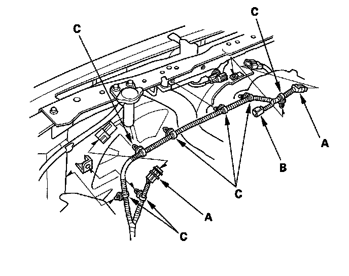
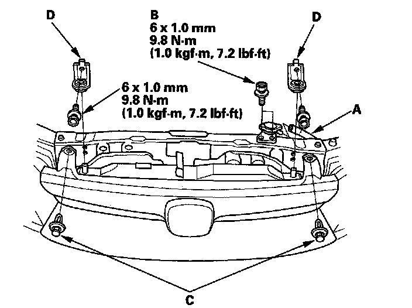
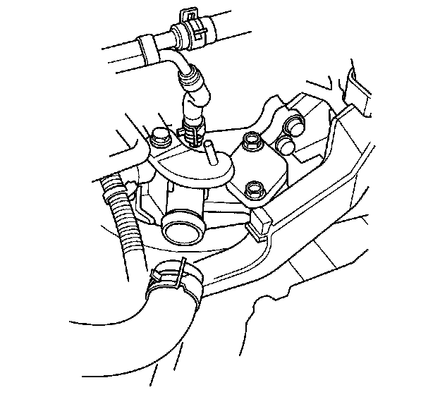
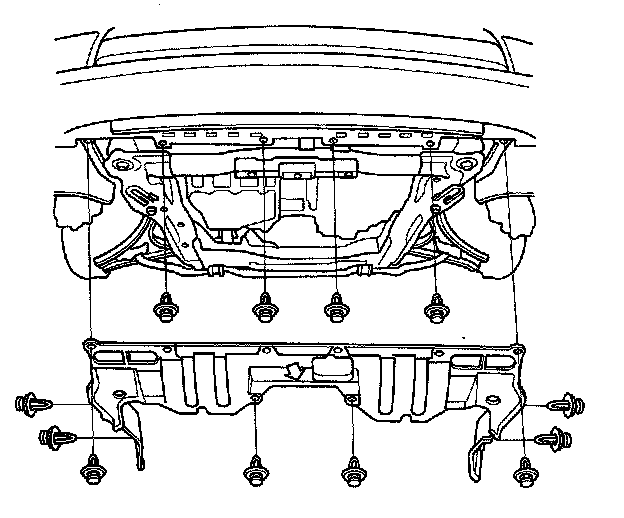
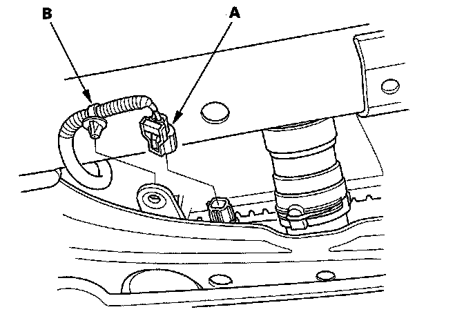
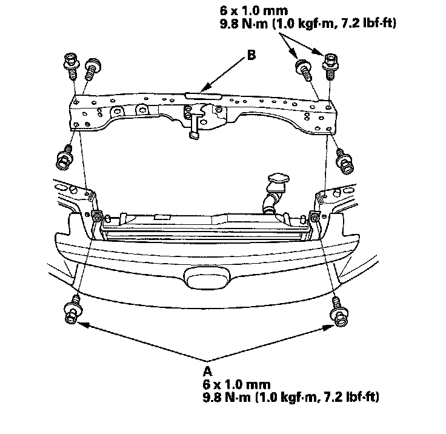
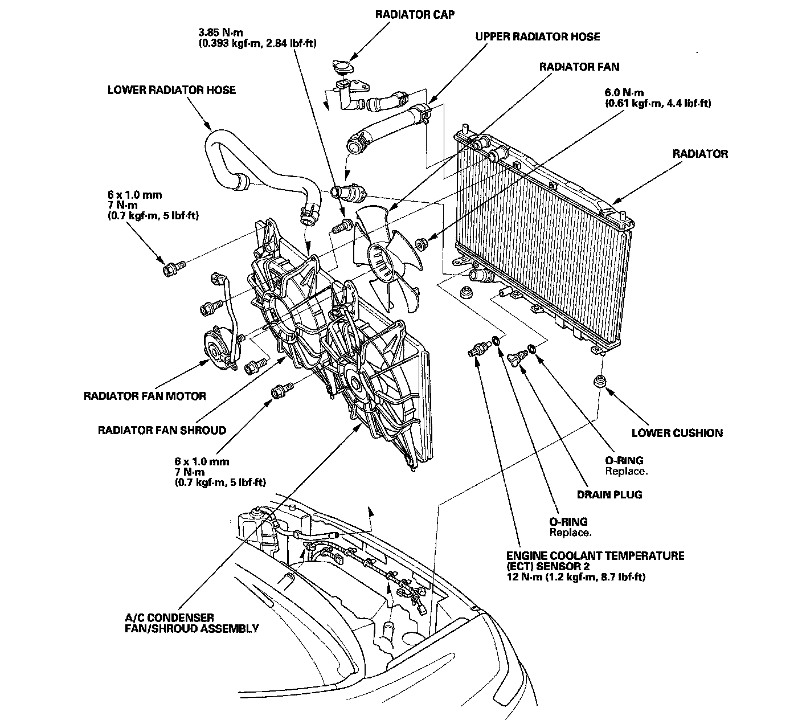

Radiator Cooling Fan: Service and Repair
Radiator and Fan Replacement1. Make sure you have the anti-theft code for the audio system and the navigation system (if equipped), then write down the audio presets.
2. Disconnect the negative cable from the battery first, then disconnect the positive cable.
3. Remove the battery.
4. Drain the engine coolant.
5. Remove the bulkhead cover.
6. Disconnect the fan motor connectors (A) and hood switch connector (B), then remove the harness clamps (C).

7. Remove the reservoir hose (A), radiator cap base mounting bolts (B), clips (C), and radiator upper brackets (D).

8. Remove the upper radiator hose.

9. Remove the splash shield.

10. Disconnect the engine coolant temperature (ECT) sensor 2 connector (A), and remove the harness clamp (B).

11. Remove the lower radiator hose from the radiator.
12. Remove the condenser bracket mounting bolts (A), then remove the bulkhead (B).

13. Pull up the radiator, then remove the fan shroud assemblies and other parts from the radiator.

14. Install the radiator in the reverse order of removal. Make sure the upper and lower cushions are set securely.
15. Install the bulkhead in the reverse order of removal. Apply body paint to the bulkhead mounting bolts.
16. Install the battery, and connect the positive cable to the battery first, then connect the negative cable.
17. Enter the anti-theft code for the audio system and the navigation system (if equipped), then enter the audio preset. Set the clock.
18. Fill the radiator with engine coolant and bleed the air.